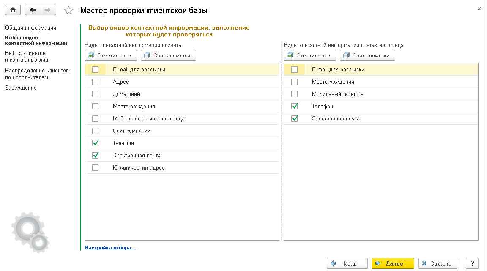
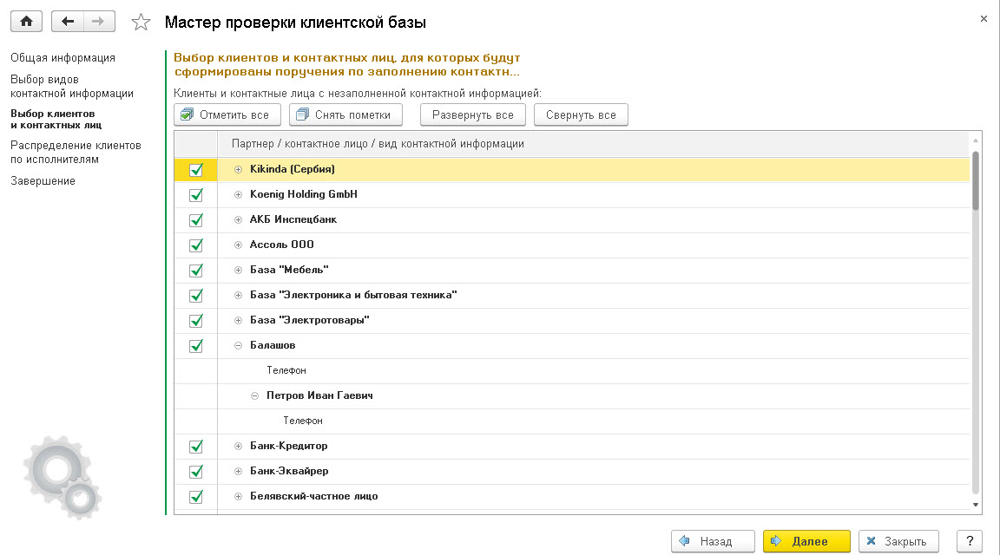
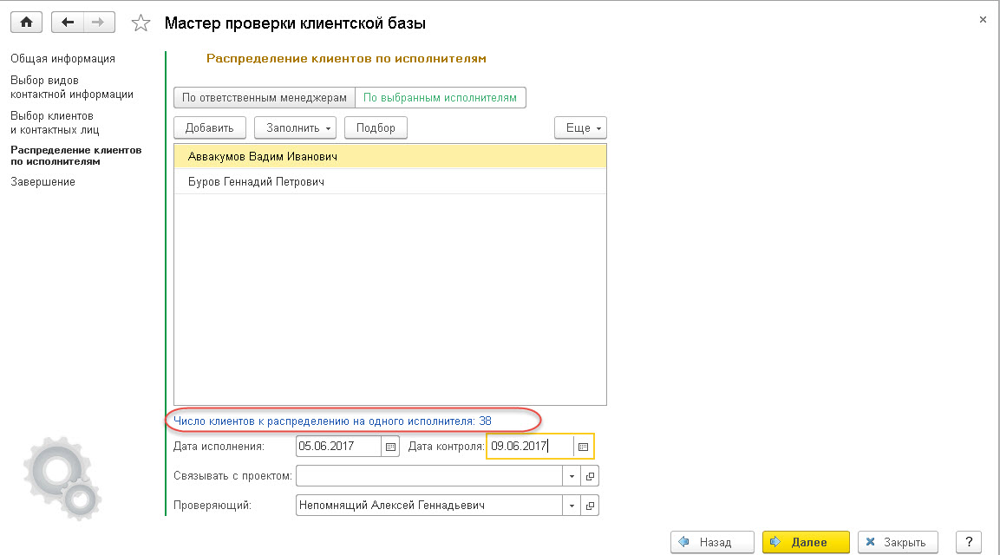

Определение структуры клиентской базы.
Определение структуры клиентской базы.Определение структуры клиентской базы.
Первым шагом при определении клиентской базы рекомендуется определить и далее указать в решении, какие каналы связи с клиентами важны для компании. В большинстве случаев это телефон (рабочий) и email. Для определения каналов связи, необходимо зайти в решение «1С:CRM.Редакция 3.0» под пользователем с полными правами (правами администратора) и перейти в раздел Настройки - Настройки системы - Общие настройки - Контактная информация - Виды контактной информации.
Примечание: При установке признака у типа контактной информации «Телефон» (например, «Мобильный телефон») важно понимать, что чрезмерное информирование по SMS может быть негативно встречено клиентами и использовать данный вид оповещения рекомендуется по важным для получателя поводам: поздравления с днем рождения физического лица, контактного лица клиента, информирование о статусе жалобы контактного лица клиента и т.д.
После определения структуры видов контактной информации необходимо актуализировать контактные данные каждого из клиентов. При этом важно, чтобы у клиента были обязательно заполнены обязательные каналы связи. В решении «1С:CRM, редакция 3.0» для этих целей рекомендуется использовать мастер «Контроль заполнения контактной информации». Данный мастер находится в разделе «Клиенты» - Сервис.
При запуске мастера можно ознакомиться с краткой информацией по его работе. После ознакомления необходимо нажать команду "Далее"

Выберем команду "Далее"

Видно, что у клиента Балашов из обязательных видов контактной информации не заполнен Телефон и у его контактного лица тоже.
Выбрав команду "Далее"
Выберем вариант Распределить по выбранным исполнителям, т.к. пока непонятно кто из менеджеров ответственный за клиентов (клиентская база только формируется). Если ответственные менеджеры для клиентов уже определены - рекомендуется выбрать вариант По ответственным менеджерам. Подберем пользователей. Установим Дату исполнения и Дату контроля исполнения заполнения контактной информации. Для анализа в дальнейшем какой объем трудозатрат составляет поддержание клиентской базы выберем отдельный процесс Поддержание клиентской базы в актуальном состоянии (для аналитики и дальнейшего контроля).

По команде "Далее", формируем для выбранных менеджеров поручения на исполнение. Клиенты распределяются пропорционально по всем исполнителям. При выставлении сроков исполнения поручения рекомендуется обращать внимание на подсказку программы, а именно сколько клиентов для уточнения контактной информации определено для каждого пользователя. Это показывает объем работы исполнителями.
В результате работы мастера будут созданы индивидулаьные поручения для каждого из исполнителей. Пользователь сможет увидеть задачу в АРМе Мои дела.
При анализе выданных поручений следует обратить внимание на следующее:
· поручения, которые еще не приняты к исполнению пользователями, выделяются желтоватым фоном;
· колонка «Осталось дней» показывает, сколько еще рабочих дней пользователь может выполнять данное поручение
· значок "Таймер"
При выполнении поручения автору появляется задача на проверку. Общий процент выполнения заполнения контактной информации отображается в форме задачи, также можно просмотреть и заполненную контактную информацию по конкретным клиентам.
Примечание: В данном примере указано, как оперативно управлять выполнением выданных поручений. Как контролировать качество исполнения выданных при использовании ключевых показателей эффективности менеджеров будет описано в отдельном разделе методик.
Итак, были выполнены действия по актуализации контактной информации в клиентской базе. Следующий раздел описывает выполнение созданных поручений ответственными менеджерами по продажам.